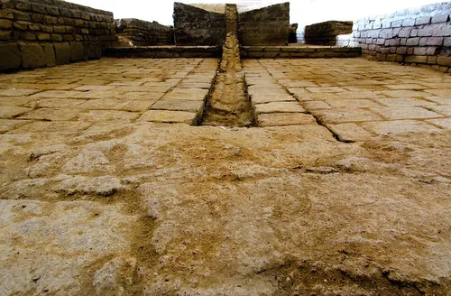

Who Was Nasir al-Din al-Tusi?
Nasir al-Din al-Tusi (Abū Jaʿfar Muḥammad ibn Muḥammad al-Ṭūsī, 1201–1274) was a Persian philosopher, mathematician, astronomer, theologian, physician, and scholar whose work became highly influential in the intellectual history of the medieval Islamic world. Born in Tus and educated in a wide range of religious and rational sciences, he became one of the most important polymaths of the thirteenth century. :contentReference[oaicite:0]{index=0}
Al-Tusi is especially remembered for his contributions to Islamic philosophy, ethics, logic, mathematics, and astronomy. His intellectual career unfolded during a period of major political upheaval, including the Mongol expansion across much of the Islamic world. Despite these circumstances, he produced an extensive body of work that moved between philosophical questions and highly technical mathematical and scientific investigations. :contentReference[oaicite:1]{index=1}
His intellectual legacy includes the Akhlaq-i Nasiri, often translated as Nasirean Ethics, one of the most important Persian works on ethics, household management, and politics. Drawing partly on earlier philosophical traditions while developing its own systematic treatment, the work helped establish al-Tusi as a major figure in the history of Islamic ethical thought. :contentReference[oaicite:2]{index=2}
Al-Tusi also played a central role in the development of medieval astronomy through his association with the Maragha Observatory, established under Mongol patronage. There he helped create a major center of astronomical research, bringing together scholars whose work contributed to new discussions of planetary theory, mathematical astronomy, and the foundations of cosmology. :contentReference[oaicite:3]{index=3}
What makes Nasir al-Din al-Tusi especially significant is the remarkable breadth of his intellectual activity. He worked across disciplines that modern scholarship often separates into philosophy, theology, mathematics, and science. His career therefore illustrates the interconnected character of knowledge in the medieval Islamic world and secured his lasting place among its most influential philosophers and scientific thinkers. :contentReference[oaicite:4]{index=4}
Nasir al-Din al-Tusi: Quick Facts
- Full name — Abū Jaʿfar Muḥammad ibn Muḥammad al-Ṭūsī
- Known as — Nasir al-Din al-Tusi, Naṣīr al-Dīn Ṭūsī, or Al-Tusi
- Born — 1201 CE
- Died — 1274 CE
- Associated with — Persia, Nishapur, Alamut, Maragha, and Baghdad
- Philosophical traditions — Islamic philosophy and Persian philosophy
- Major subjects — Ethics, logic, metaphysics, theology, astronomy, mathematics, and natural philosophy
- Famous ethical work — Akhlaq-i Nasiri
- Major astronomical work — Al-Tadhkira fi ʿilm al-hayʾa
- Important mathematical contribution — Trigonometry and the Tusi couple
- Important institution — Maragha Observatory
Nasir al-Din al-Tusi's Early Life and Education

Nasir al-Din al-Tusi was born in Tus, in northeastern Persia, in 1201. He grew up in a learned Twelver Shi'ite family, and his early education began with the religious sciences. Under the guidance of his father and other teachers, he studied Arabic, the Qur'an, Hadith, jurisprudence, and other branches of Islamic learning while also developing an early interest in philosophy and the mathematical sciences.
His education was therefore unusually broad from the beginning. Alongside religious scholarship, he pursued mathematics, logic, natural philosophy, and other rational sciences inherited from Greek and earlier Islamic traditions. This combination of disciplines was characteristic of the intellectual culture in which he was educated and later became one of the defining features of his own work.
Al-Tusi later continued his studies in Nishapur, one of the major centers of learning in the medieval Persian world. There he encountered advanced work in mathematics, medicine, natural science, and philosophy, including the philosophical tradition associated with Avicenna (Ibn Sina). Avicenna's ideas would remain a major point of reference throughout al-Tusi's later philosophical career.
His studies did not end in Nishapur. He continued to learn from scholars in different regions, including Iraq and Mosul, and acquired knowledge across a remarkably wide range of subjects. By the time he entered public intellectual life, he had received the kind of interdisciplinary education that enabled him to work seriously in philosophy, theology, mathematics, astronomy, logic, and other sciences.
This broad education became characteristic of Al-Tusi's later intellectual career. Rather than restricting himself to one discipline, he moved between fields that modern scholarship often treats separately. For al-Tusi, mathematics, astronomy, philosophy, logic, ethics, and theology formed interconnected parts of a larger pursuit of knowledge.
Al-Tusi and the Intellectual World of Medieval Persia
Al-Tusi lived during one of the most dramatic periods of political change in the history of the Islamic world. The thirteenth century witnessed the rapid expansion of Mongol power, the destruction of established political centers, and major changes in the structure of Persian and Islamic society. These events formed the historical background to much of his intellectual and political career.
The Mongol invasions caused enormous destruction, but they did not bring intellectual life to an end. Scholarship continued in courts, religious institutions, libraries, and regional centers of learning. Philosophers, theologians, physicians, mathematicians, and astronomers continued to circulate between different political environments, often depending on powerful patrons for protection and financial support.
Al-Tusi himself moved through several very different intellectual worlds. His career included study in Nishapur, service among the Nizari Ismailis of Qohistan, residence within the political world associated with Alamut, and later an influential position under the Mongol ruler Hulagu Khan.
These changes in patronage and political circumstances have made al-Tusi's biography the subject of sharply differing historical interpretations. Some aspects of his relationship with the Ismailis and later with the Mongols remain debated. It is therefore important to distinguish what is historically well established from later stories that present his actions in overly simple terms.
This historical setting is essential for understanding Nasir al-Din al-Tusi's philosophy. His career connected Persian intellectual traditions with Avicennian philosophy, Shi'ite theology, Ismaili thought, mathematics, and astronomy, while his later work helped shape the intellectual life of the Ilkhanid period.
Nasir al-Din al-Tusi and Avicenna
Avicenna was one of the most important philosophical influences on Al-Tusi. During his education, al-Tusi studied the philosophical sciences that had been transformed by Avicenna, whose writings provided a comprehensive system dealing with logic, metaphysics, natural philosophy, psychology, and the nature of knowledge.
Al-Tusi became one of the major defenders and interpreters of the Avicennian tradition during the thirteenth century. This was particularly significant because Avicenna's philosophy had become the subject of extensive criticism and debate among theologians and philosophers. Al-Tusi entered these debates rather than simply repeating the master's conclusions.
One of his most important philosophical achievements was his detailed engagement with Avicenna's al-Isharat wa al-Tanbihat. In his commentary, al-Tusi responded to criticisms and interpretations associated with other thinkers, particularly the influential theological-philosophical tradition represented by Fakhr al-Din al-Razi.
Al-Tusi's philosophical work therefore involved explanation, defense, and development. He clarified difficult Avicennian arguments while participating in later debates about metaphysics, knowledge, causation, and theology. His work helped ensure that Avicennian philosophy remained a living intellectual tradition rather than merely a body of inherited texts.
His relationship with Avicenna was thus one of the central foundations of his philosophy. Although al-Tusi was primarily a reviver of the Avicennian Peripatetic tradition, his thought developed within the changing intellectual conditions of thirteenth-century Islamic philosophy and engaged seriously with theological as well as philosophical questions.
Al-Tusi and Ismaili Philosophy
An important period of Al-Tusi's life began when he entered the intellectual and political world of the Nizari Ismailis in eastern Persia. During the early 1230s he found patronage among Ismaili rulers in Qohistan, where the political instability created by the Mongol invasions had transformed the conditions under which scholars could pursue their work.
His association with the Ismailis provided him with important opportunities for intellectual activity. During this period he continued writing on philosophy, ethics, logic, mathematics, and astronomy. Some of his major works were composed or developed while he lived under Ismaili patronage, including the famous ethical work Akhlaq-i Nasiri.
Al-Tusi's writings from this broader period also engage with subjects including God, prophecy, the imamate, cosmology, ethics, existence, and religious knowledge. His work demonstrates that philosophical inquiry continued within the complex intellectual environment of the Nizari Ismaili community.
The exact nature of al-Tusi's personal relationship with the Ismailis has been debated by historians. Earlier accounts sometimes portrayed him as a prisoner, while other evidence indicates a more complicated relationship involving intellectual patronage and genuine engagement with Ismaili ideas. Modern scholarship therefore treats simple explanations of this period with caution.
This part of Al-Tusi's career is important because his intellectual development cannot be separated entirely from the different theological and philosophical environments in which he worked. His Ismaili writings remain an essential source for understanding both the diversity of his thought and the wider intellectual history of medieval Islam.
Nasir al-Din al-Tusi at Alamut
After his earlier association with Ismaili rulers in Qohistan, Al-Tusi became connected with the Nizari Ismaili center associated with Alamut and other mountain fortresses. Alamut was not merely a military stronghold; it also belonged to a wider network of political, religious, and intellectual institutions maintained by the Nizari Ismailis.
Al-Tusi spent a substantial part of his career within this Ismaili environment. During these years he continued writing on philosophy, theology, ethics, mathematics, and other sciences. His intellectual productivity demonstrates that serious scholarship could continue even in politically unstable conditions and within geographically isolated centers.
His writings from this period include works that reflect engagement with specifically Ismaili doctrines. Questions concerning the imamate, prophecy, religious authority, knowledge, and spiritual development appear alongside his continued interest in the philosophical sciences inherited from earlier Islamic and Greek traditions.
The circumstances of his life at Alamut remain historically complex. Sources and later historians have offered different interpretations of how freely he moved within the Ismaili political system and how his personal religious commitments changed during this period. Such questions should not be reduced to a simple story of either complete independence or complete captivity.
The fall of Alamut to the Mongols in 1256 brought this stage of his life to an end and opened a new phase in his career. Soon afterward, al-Tusi became associated with the court of Hulagu Khan, where his access to political patronage would make the great scientific project at Maragha possible.
Al-Tusi and Hulagu Khan
After the Mongol conquest of the Nizari Ismaili strongholds in 1256, Al-Tusi entered the political world of Hulagu Khan, the founder of the Ilkhanid state in Persia. His position gave him access to resources and patronage that would become crucial for his later scientific and administrative activities.
Al-Tusi served Hulagu in an influential capacity and became associated with the Ilkhanid administration. His exact political role changed over time, but he was involved in scientific, religious, and administrative affairs. His proximity to power allowed him to promote projects that required substantial financial and institutional support.
Al-Tusi's relationship with Hulagu has been interpreted in very different ways by historians. Because he moved from the Ismaili world into the service of the Mongol conquerors, later writers sometimes judged his career through strongly partisan narratives. The surviving evidence instead points to a complex political life shaped by the extraordinary transformations of the thirteenth century.
The most important intellectual result of this new patronage was the establishment of the scientific institution at Maragha. With Ilkhanid support, al-Tusi was able to organize astronomical research, attract scholars, acquire instruments and books, and undertake a long-term program of observation and mathematical investigation.
His work during the Ilkhanid period therefore demonstrates the importance of patronage in medieval science. The resources of the Mongol state helped make possible one of the most ambitious astronomical institutions of the medieval world and secured al-Tusi's place at the center of its scientific activity.
What Was Nasir al-Din al-Tusi's Philosophy?
Al-Tusi's philosophy cannot be reduced to a single doctrine. It brought together the Avicennian philosophical tradition with logic, ethics, metaphysics, natural philosophy, and theological inquiry. His writings addressed some of the central questions inherited from Greek philosophy and transformed within the intellectual traditions of Islam.
His philosophical interests included questions about existence, necessity and possibility, causation, God, the soul, knowledge, human action, intellect, and happiness. He approached many of these questions through rigorous argument and logical analysis while remaining deeply engaged with the theological debates of his own intellectual environment.
Al-Tusi was especially important as a defender and interpreter of Avicenna. His philosophical commentaries helped preserve the technical vocabulary and arguments of the Avicennian tradition while also responding to criticisms made by later thinkers. This work contributed to the continuing development of philosophy in the eastern Islamic world.
Ethics also occupied a central position in his thought. Unlike a philosophy concerned only with abstract metaphysical problems, al-Tusi examined how human beings should cultivate their character, regulate desire, organize households, and participate in political communities. Philosophy therefore had practical as well as theoretical importance.
Al-Tusi was therefore not only an astronomer or mathematician. He was also one of the important contributors to the later development of Islamic philosophy, particularly through his defense of Avicennian thought, his ethical writings, and his role in bringing philosophical argument into closer conversation with Shi'ite theology.
Al-Tusi's Metaphysics and Philosophy of Existence
Metaphysics occupies an important place in Al-Tusi's philosophical writings. His discussions engage with questions concerning existence, necessity and possibility, causation, the First Principle, and the fundamental structure of reality. These subjects formed part of the philosophical framework he inherited primarily from Avicenna.
A central concern of the Avicennian tradition was the distinction between things whose existence is contingent and that which exists necessarily. Contingent beings depend upon causes for their existence, whereas the Necessary Existent does not depend upon another cause. Al-Tusi worked within this conceptual framework while clarifying and defending its philosophical significance.
His metaphysical thought was closely connected with questions about causation. To understand reality philosophically was not simply to describe individual objects but to investigate the principles on which their existence and intelligibility depend. Such arguments linked metaphysics with natural philosophy and theological reflection.
Much of al-Tusi's philosophical work develops within the intellectual framework inherited from Avicenna while responding to criticisms raised by later theologians and philosophers. His commentaries and polemical writings show that metaphysical concepts remained subjects of active debate rather than universally accepted doctrines.
Al-Tusi's metaphysics therefore belongs to an important stage in the continuing development of medieval Islamic philosophy. Through his interpretation and defense of philosophical argument, he helped sustain the Avicennian tradition while contributing to its interaction with later Islamic theology.
Al-Tusi's Philosophy of God and Theology
Al-Tusi investigated theological questions through philosophical argument and participated in major debates concerning God, existence, causation, prophecy, the imamate, and human action. His intellectual career illustrates the close interaction between philosophy and kalam, or dialectical theology, in the later medieval Islamic world.
Philosophical reasoning allowed al-Tusi to employ concepts developed in metaphysics and logic when discussing theological questions. This did not mean that philosophy simply replaced religious doctrine. Instead, his work represents an important attempt to examine theological commitments through systematic argument and increasingly technical conceptual analysis.
His Tajrid al-I'tiqad became one of his most influential theological works. The text presents a concise and systematic treatment of major theological questions and later became the subject of an extensive commentary tradition. Its influence extended far beyond al-Tusi's own lifetime.
Al-Tusi is particularly important in the history of Twelver Shi'ite thought because philosophical terminology and metaphysical reasoning became increasingly integrated into theological discussion. His work contributed to the development of a form of philosophical theology that later scholars continued to debate and elaborate.
His theology therefore cannot be separated sharply from his philosophy. Questions about God, causation, existence, and human responsibility required both theological commitments and philosophical analysis. This combination became one of the defining characteristics of his intellectual legacy.
What Was Al-Tusi's Philosophy of Ethics?
Al-Tusi's ethics is one of the most important parts of his philosophical legacy. His ethical theory examines human character, virtue, reason, happiness, self-discipline, and the organization of human life. Ethics for al-Tusi was concerned with the transformation and cultivation of the person rather than merely obedience to isolated rules.
His ethical philosophy is closely connected with the cultivation of the rational soul. Human beings possess different faculties and desires that must be brought into an appropriate order. Virtue develops when reason is able to guide and regulate the appetites, emotions, and actions of the individual.
This ethical framework reflects the influence of earlier Greek and Islamic philosophical traditions, particularly Aristotle and the Persian philosopher Ibn Miskawayh. Al-Tusi, however, presented these inherited ideas within his own broad philosophical and religious context.
Al-Tusi's ethical thought also extends beyond individual morality. Human beings live within families, households, and political communities, and ethical development therefore has social and political dimensions. A well-ordered life requires attention not only to personal virtue but also to the relationships through which people cooperate with others.
The ultimate purpose of ethical cultivation is closely related to human flourishing and happiness. Reason, virtue, education, and disciplined habits allow human beings to develop their capacities more fully and move toward a more complete and properly ordered form of life.
Akhlaq-i Nasiri: Al-Tusi's Nasirean Ethics
Akhlaq-i Nasiri, commonly translated as Nasirean Ethics, is Al-Tusi's best-known philosophical work on ethics. Written in Persian and dedicated to his Ismaili patron Nasir al-Din Abd al-Rahim, the work became one of the most influential texts in the history of Persian ethical and philosophical literature.
The work is organized around three broad areas of human life: ethics, household management, and political organization. This structure reflects a classical philosophical tradition in which the individual, the household, and the wider political community were regarded as connected levels of moral and social order.
In its discussion of individual ethics, al-Tusi examines the nature of the soul, the formation of character, the virtues, and the role of reason in governing desire. He draws particularly on the ethical tradition associated with Aristotle and Ibn Miskawayh while adapting and reorganizing this material within a broader intellectual framework.
The discussion of the household considers relationships and responsibilities within domestic life, while the political sections turn toward questions of cooperation, social organization, and the conditions necessary for a well-ordered community. Ethics is therefore presented as something that extends from personal character into collective life.
Akhlaq-i Nasiri became one of the most influential works in the history of Persian ethics and Islamic philosophy. Later writers studied, adapted, and responded to its approach, ensuring that al-Tusi's ethical ideas remained part of the Persian intellectual tradition for centuries.
Al-Tusi's Philosophy of Logic
Logic was another major field in Al-Tusi's intellectual work. Like many philosophers in the Islamic Peripatetic tradition, he regarded logical analysis as essential for disciplined inquiry. Logic provided the tools required to distinguish valid reasoning from error and to organize philosophical and scientific arguments systematically.
Al-Tusi inherited a logical tradition that originated in the works of Aristotle and had been extensively developed by Islamic philosophers, especially al-Farabi and Avicenna. By his time, logic had become a highly sophisticated discipline involving questions about concepts, propositions, definition, demonstration, inference, and scientific knowledge.
His major logical work, Asas al-Iqtibas, became an important contribution to the history of logic in the Islamic world. The work treats logical questions systematically and demonstrates al-Tusi's command of a technical philosophical tradition that had developed over many centuries.
Logic was not isolated from his other interests. It provided an intellectual foundation for philosophical debate, theological argument, and scientific investigation. The ability to construct precise definitions and evaluate arguments was essential to his larger conception of rational inquiry.
Al-Tusi's work on logic therefore demonstrates his broader commitment to rigorous reasoning. Whether discussing metaphysics, theology, ethics, or the sciences, he belonged to an intellectual tradition in which logical discipline was regarded as indispensable for the serious pursuit of knowledge.
Al-Tusi on Human Action, Free Will, and Determinism
Questions concerning human action, free will, and determinism occupied an important place within Islamic philosophical and theological debates. Thinkers had to explain how human beings could be morally responsible for their actions while also affirming divine knowledge, divine power, and the causal order of the universe.
Al-Tusi approached these problems within the wider traditions of philosophy and theology available to him. His discussions of causation and the human soul were relevant to the question of agency because voluntary action involves knowledge, desire, deliberation, and the power to act.
A simple opposition between absolute freedom and complete determinism does not adequately describe the intellectual debates of his period. Medieval Islamic thinkers developed more complex accounts of how divine causation and human responsibility might be understood together.
Al-Tusi's ethical philosophy also gives human action particular importance. The cultivation of virtue presupposes that education, deliberation, habit, and disciplined conduct matter to the formation of character. Moral life would be difficult to explain if human choices and actions had no meaningful role in the development of the individual.
These questions connect Al-Tusi's philosophy with broader Islamic discussions about responsibility, causation, divine knowledge, and the nature of human choice. His importance lies partly in the way philosophical reasoning and theological concerns continued to interact within these debates.
Al-Tusi and Ismaili Philosophical Thought
Al-Tusi's writings associated with his Ismaili period contain discussions of the imamate, prophecy, resurrection, cosmology, existence, ethics, and religious knowledge. These works show his engagement with a distinctive intellectual tradition in which philosophical reasoning was closely connected with the authority and teaching of the Imam.
One important work associated with this period is Rawdat al-Taslim, also known in different transliterations as Rawda-yi Taslim. The work presents important themes within Nizari Ismaili thought and is particularly valuable for understanding the intellectual environment in which al-Tusi lived during this stage of his career.
Ismaili philosophical thought involved questions about the relationship between outward religious forms and deeper intellectual or spiritual understanding. The authority of the Imam, the meaning of revelation, and the proper relationship between reason and religious guidance were among the subjects explored within this tradition.
Al-Tusi's engagement with these ideas should not be treated as a temporary interruption in an otherwise purely Avicennian career. His Ismaili writings form an important part of his intellectual development and demonstrate the range of traditions with which he was able to work seriously.
His Ismaili writings are therefore essential for understanding the diversity of Al-Tusi's thought. They reveal a philosopher and scholar whose career passed through different religious and political environments and whose intellectual legacy cannot be explained by reference to only one school of Islamic philosophy.
Nasir al-Din al-Tusi's Contributions to Astronomy
Tusi's astronomy is among his most famous intellectual achievements. He investigated planetary motion, mathematical astronomy, astronomical instruments, and the theoretical problems found within the inherited Ptolemaic system. His work formed part of a wider tradition of critical astronomical research in the medieval Islamic world.
Ptolemaic astronomy offered powerful mathematical models for predicting celestial motion, but some philosophers and astronomers believed that certain features of its planetary models created physical or philosophical difficulties. Al-Tusi participated in attempts to reform astronomical models while preserving their mathematical effectiveness.
His astronomical writings combined mathematical analysis with detailed study of earlier Greek and Islamic traditions. He produced redactions and commentaries on important scientific works while also developing original mathematical devices and models for the study of planetary motion.
The most famous example is the Tusi couple, a mathematical device that generated linear motion from combinations of circular motion. Developed in the context of astronomical modeling, it became one of the best-known achievements associated with his attempt to address problems in planetary theory.
Al-Tusi's astronomical work became highly influential among later Islamic astronomers and contributed to the continuing critical examination of Ptolemaic astronomy. The astronomical tradition associated with Maragha would remain important long after his death.
Al-Tusi and the Maragha Observatory

The Maragha Observatory was one of the most important scientific institutions associated with Al-Tusi. Established under Ilkhanid patronage in the second half of the thirteenth century, it became a major center for astronomical observation, mathematical research, and scholarly collaboration.
Al-Tusi played a central role in organizing the project and became its leading scientific figure. The institution required substantial political and financial support, including the construction of buildings, the acquisition of astronomical instruments, and the collection of books for a significant scholarly library.
The observatory attracted scholars from different parts of the Islamic world and brought together expertise in astronomy and mathematics. Research at Maragha involved the observation of celestial phenomena, mathematical calculation, the refinement of astronomical tables, and the continuing examination of planetary models.
One major result of the scientific activity associated with Maragha was the production of the Zij-i Ilkhani, an important set of astronomical tables. The work reflected long-term observation and calculation and became part of the wider history of medieval Islamic astronomy.
The observatory represents an important example of institutional science in the medieval Islamic world. Its legacy extended beyond al-Tusi's lifetime, and the astronomical approaches associated with the so-called Maragha school influenced later generations of astronomers.
What Is the Tusi Couple?
The Tusi couple is one of Nasir al-Din al-Tusi's best-known mathematical contributions to astronomy. It is a geometric device designed to show how a combination of uniform circular motions can produce a motion that appears linear.
In its basic form, the construction involves two circles of equal size, one moving within another under carefully specified conditions. A point on the smaller circle then moves back and forth along a straight line. The result is mathematically striking because linear oscillation is generated from circular motions.
Al-Tusi developed this mathematical device in the context of astronomical modeling. Ancient and medieval astronomers often attempted to explain celestial motion through combinations of circular movements, and the Tusi couple offered a new mathematical resource for constructing such models.
Its historical importance lies partly in its role within the broader criticism and reform of Ptolemaic astronomy. The device helped astronomers explore alternatives to some of the geometrical features of inherited planetary models without abandoning the mathematical principle of uniform circular motion.
The Tusi couple later became famous in the history of astronomy because similar mathematical constructions appear in later astronomical traditions. Its precise relationship to the work of European astronomers such as Copernicus remains a subject of historical research, but al-Tusi's construction is unquestionably one of the major achievements of medieval mathematical astronomy.
Al-Tusi's Contributions to Mathematics and Trigonometry
Nasir al-Din al-Tusi's mathematics covered geometry, arithmetic, astronomical calculation, and especially trigonometry. He also produced important redactions and commentaries on mathematical works from Greek and earlier Islamic traditions, helping preserve and develop a large body of scientific knowledge.
One of his most important achievements was his treatment of trigonometry as a mathematical discipline in its own right. Earlier trigonometric methods had often been developed in close connection with astronomy, but al-Tusi presented the subject more systematically and contributed to its growing independence.
He made significant contributions to spherical trigonometry, the branch concerned with figures on the surface of a sphere. This field was especially important for astronomy because the apparent positions and movements of celestial bodies could be studied through mathematical relationships on the celestial sphere.
Al-Tusi also worked extensively on geometry and on the mathematical writings of earlier thinkers. His engagement with Euclidean geometry included discussion of the famous parallel postulate, a problem that continued to interest mathematicians for centuries and later became important in the history of non-Euclidean geometry.
His mathematical legacy therefore extends beyond any single theorem or discovery. Through original work, systematic exposition, and critical engagement with earlier texts, al-Tusi became one of the major mathematical scholars of the medieval Islamic world.
Al-Tusi's Major Works on Astronomy
Al-Tusi wrote several important works dealing with astronomy, mathematical models of the heavens, astronomical tables, and the interpretation of earlier scientific texts. Together, these writings demonstrate his role as both an original investigator and a major interpreter of the astronomical tradition inherited from antiquity.
- Al-Tadhkira fi ʿilm al-hayʾa — A major work on theoretical astronomy that discusses celestial models and mathematical problems in planetary theory. It is particularly important for understanding al-Tusi's attempts to reform aspects of inherited Ptolemaic astronomy.
- Zij-i Ilkhani — A major set of astronomical tables produced through the scientific activity associated with the Ilkhanid period and the Maragha Observatory. It provided calculations for the positions and movements of celestial bodies.
- Tahrir al-Majisti — Al-Tusi's detailed redaction and mathematical treatment of Ptolemy's Almagest. Like several of his scientific redactions, the work combined the preservation of an earlier text with critical mathematical analysis.
- Zubdat al-Idrak fi Hay'at al-Aflak — A work concerned with mathematical astronomy and the structure of the celestial spheres, reflecting al-Tusi's broader interest in explaining astronomical phenomena through systematic mathematical models.
Al-Tusi's Contributions to Science and Medicine
Al-Tusi's intellectual interests extended far beyond philosophy and astronomy. His surviving writings and scholarly activities include work connected with mathematics, medicine, mineralogy, natural philosophy, and other scientific subjects. He also produced commentaries and redactions of important works inherited from earlier Greek and Islamic scholarship.
His work in medicine included engagement with the medical tradition associated with Avicenna, while his broader scientific interests brought him into contact with questions about the physical world, celestial phenomena, mathematical measurement, and the classification of knowledge.
Al-Tusi's scientific activity was also connected with his institutional work at Maragha. The observatory was not simply a place for observing the sky; it formed part of a wider scholarly environment in which mathematics, astronomy, instruments, books, and scientific teaching could be brought together.
This breadth reflects the interdisciplinary character of medieval Islamic scholarship, where philosophy, mathematics, astronomy, medicine, and natural science were often treated as related branches of knowledge. Modern disciplinary boundaries did not define intellectual work in the same way they do today.
Al-Tusi's scientific career therefore illustrates why he is remembered as one of the major polymaths of medieval Islamic civilization. His importance lies not only in individual discoveries but also in the extraordinary range of disciplines in which he was able to make lasting contributions.
Major Works of Nasir al-Din al-Tusi
Al-Tusi was an exceptionally prolific author. His works cover philosophy, ethics, logic, theology, mathematics, astronomy, and other sciences. Some were original treatises, while others were detailed commentaries or redactions of influential earlier texts.
- Akhlaq-i Nasiri — A major philosophical work on ethics, household management, and political organization. It became one of the most influential ethical works written in Persian.
- Asas al-Iqtibas — One of al-Tusi's most important works on logic, dealing with the principles and methods of rigorous reasoning.
- Tajrid al-I'tiqad — A highly influential work of Shi'ite theology that became the subject of an extensive later commentary tradition.
- Rawdat al-Taslim — An important work associated with Nizari Ismaili intellectual thought, addressing themes including religious authority, knowledge, and spiritual understanding.
- Al-Tadhkira fi ʿilm al-hayʾa — An important work on theoretical astronomy and mathematical models of the celestial spheres and planetary motions.
- Zij-i Ilkhani — A major set of astronomical tables associated with the scientific work of the Ilkhanid period and the Maragha Observatory.
- Tahrir al-Majisti — A major mathematical and astronomical treatment of Ptolemy's Almagest, combining textual redaction with scientific analysis.
Nasir al-Din al-Tusi's Main Philosophical Ideas
1. Virtue and Rational Self-Cultivation
Al-Tusi's ethical philosophy emphasizes the cultivation of virtue through education, discipline, and the proper ordering of the soul. Reason should guide human desires and actions so that the different elements of human character develop in a balanced and constructive way.
2. Philosophy and Reason
Philosophical reasoning provides a disciplined method for investigating reality, knowledge, ethics, and theological questions. Al-Tusi's defense and interpretation of Avicennian philosophy demonstrate his commitment to logical and metaphysical argument as essential instruments of inquiry.
3. Ethics and Happiness
Human flourishing requires more than temporary pleasure or material success. For al-Tusi, a good life involves the development of virtue, the cultivation of the rational capacities of the soul, and the proper organization of individual, household, and social life.
4. Logic and Knowledge
Logic provides tools for distinguishing sound reasoning from invalid reasoning. By studying concepts, propositions, definitions, and forms of inference, the thinker can approach philosophical and scientific questions with greater precision and avoid errors in argument.
5. Philosophy and Religion
Al-Tusi worked within intellectual traditions in which philosophical reasoning and theological inquiry frequently interacted. His career shows how metaphysical concepts and logical methods could be employed in debates concerning God, prophecy, the imamate, causation, and human responsibility.
6. Mathematics and the Structure of Nature
His mathematical astronomy demonstrates how abstract mathematical models can be used to investigate the structure and motion of the heavens. The Tusi couple and his work in trigonometry illustrate his belief in the importance of mathematical reasoning for understanding the natural world.
Nasir al-Din al-Tusi's Influence and Legacy
Al-Tusi's influence extended across philosophy, theology, mathematics, and astronomy. His works were studied, copied, commented upon, and incorporated into later intellectual traditions. Few medieval scholars achieved such lasting influence across both the philosophical and exact sciences.
His philosophical importance was especially great in the continuation of the Avicennian tradition. Through commentary, criticism, and defense, al-Tusi helped ensure that Avicennian metaphysics and logic remained central to later philosophical debates in the eastern Islamic world.
His Tajrid al-I'tiqad became highly influential in later Islamic theology and generated an extensive tradition of commentaries and glosses. His work helped demonstrate how philosophical concepts could be incorporated into systematic theological discussion, particularly within Twelver Shi'ite intellectual traditions.
His astronomical writings became especially important for later Islamic astronomers. The mathematical models developed by al-Tusi and other scholars associated with the Maragha tradition formed part of a long continuing effort to examine and reform aspects of Ptolemaic astronomy.
His Akhlaq-i Nasiri remained influential in Persian ethical and philosophical literature, while his works on logic and mathematics continued to be valued by later scholars. His systematic treatment of trigonometry also secured him an important place in the history of mathematics.
Al-Tusi's legacy is therefore both philosophical and scientific. He helped preserve, develop, and transform major traditions of Islamic philosophy, Persian philosophy, theology, mathematics, and astronomy, making him one of the defining polymaths of the thirteenth-century Islamic world.
Frequently Asked Questions About Nasir al-Din al-Tusi
Who was Nasir al-Din al-Tusi?
Nasir al-Din al-Tusi was a thirteenth-century Persian philosopher, mathematician, astronomer, theologian, physician, and scholar. He was one of the most influential polymaths of the medieval Islamic world.
What is Nasir al-Din al-Tusi famous for?
Al-Tusi is famous for his contributions to Islamic philosophy, ethics, logic, mathematics, astronomy, and theology. He is also strongly associated with the Maragha Observatory and the Tusi couple.
What was Al-Tusi's philosophy?
Al-Tusi's philosophy developed within the traditions of Islamic and Persian philosophy and engaged extensively with Avicennian metaphysics, ethics, logic, theology, and questions about human knowledge and action.
What is Al-Tusi's most famous philosophical book?
Al-Tusi's most famous philosophical and ethical work is Akhlaq-i Nasiri, also known as the Nasirean Ethics.
What is Akhlaq-i Nasiri?
Akhlaq-i Nasiri is Al-Tusi's major Persian treatise on ethics, household management, and political organization. It became an important work in the history of Persian and Islamic ethical philosophy.
What was Al-Tusi's contribution to astronomy?
Al-Tusi made important contributions to mathematical astronomy, planetary modeling, astronomical tables, and the criticism and development of Ptolemaic astronomy.
What is the Tusi couple?
The Tusi couple is a mathematical model developed by Al-Tusi involving two circular motions that can produce linear oscillatory motion. It became an important device in medieval Islamic astronomy.
What was the Maragha Observatory?
The Maragha Observatory was a major astronomical research center associated with Al-Tusi during the Ilkhanid period. It brought together astronomers and mathematical scientists to investigate celestial phenomena.
Did Al-Tusi influence astronomy?
Yes. Al-Tusi influenced the development of Islamic astronomy through his mathematical models, astronomical writings, observations, and work at the Maragha Observatory.
What was Al-Tusi's contribution to mathematics?
Al-Tusi made important contributions to geometry, arithmetic, trigonometry, and spherical trigonometry. His mathematical work was closely connected with astronomy.
Was Al-Tusi influenced by Avicenna?
Yes. Avicennian philosophy was an important influence on Al-Tusi's philosophical development. Al-Tusi engaged critically with Avicenna's philosophical system and helped transmit it to later generations.
What did Al-Tusi think about ethics?
Al-Tusi believed that ethical development involves cultivating virtue, regulating desires through reason, and organizing human life toward rational and moral flourishing.
What is Al-Tusi's contribution to Islamic philosophy?
Al-Tusi contributed to Islamic philosophy through his work on metaphysics, ethics, logic, theology, human action, and the relationship between philosophical reasoning and religious thought.
What did Al-Tusi write about logic?
Al-Tusi wrote extensively on logic, most notably in Asas al-Iqtibas, an important work in the history of logic within the Islamic philosophical tradition.
What was Al-Tusi's relationship with the Ismailis?
Al-Tusi spent a substantial period in Ismaili-controlled territories and produced philosophical and theological works engaging with Ismaili ideas before later entering the Ilkhanid intellectual world.
Did Al-Tusi work with Hulagu Khan?
Yes. Al-Tusi became associated with Hulagu Khan's court and played an important role in the intellectual and scientific environment that developed under Ilkhanid patronage.
Why is Nasir al-Din al-Tusi important?
Al-Tusi is important because his work connected philosophy, mathematics, astronomy, theology, and ethics. He became one of the major intellectual figures linking earlier Islamic philosophy with later developments in Persian and Islamic scholarship.
Related Islamic and Persian Philosophers
Explore other major thinkers connected with Islamic philosophy, Persian philosophy, medieval philosophy, and the development of mathematics and science.
Related Areas of Philosophy
Al-Tusi's work connects Islamic philosophy with ethics, metaphysics, epistemology, logic, philosophy of science, mathematics, astronomy, theology, and medieval intellectual history.
Why Nasir al-Din al-Tusi Still Matters
Nasir al-Din al-Tusi occupies a remarkable position in the history of philosophy and science. His work brought together ethics, logic, metaphysics, theology, mathematics, astronomy, and medicine within the intellectual traditions of the medieval Islamic world.
His Akhlaq-i Nasiri became an important work in Persian ethical philosophy, while his writings on logic and theology influenced later Islamic scholars. His mathematical and astronomical research, particularly the work associated with the Maragha Observatory and the Tusi couple, became important parts of the history of astronomy.
Studying Al-Tusi also reveals the continuing development of Avicennian philosophy and the sophisticated relationship between philosophy, mathematics, astronomy, and theology in medieval Islamic intellectual history.
Explore Great Philosophers